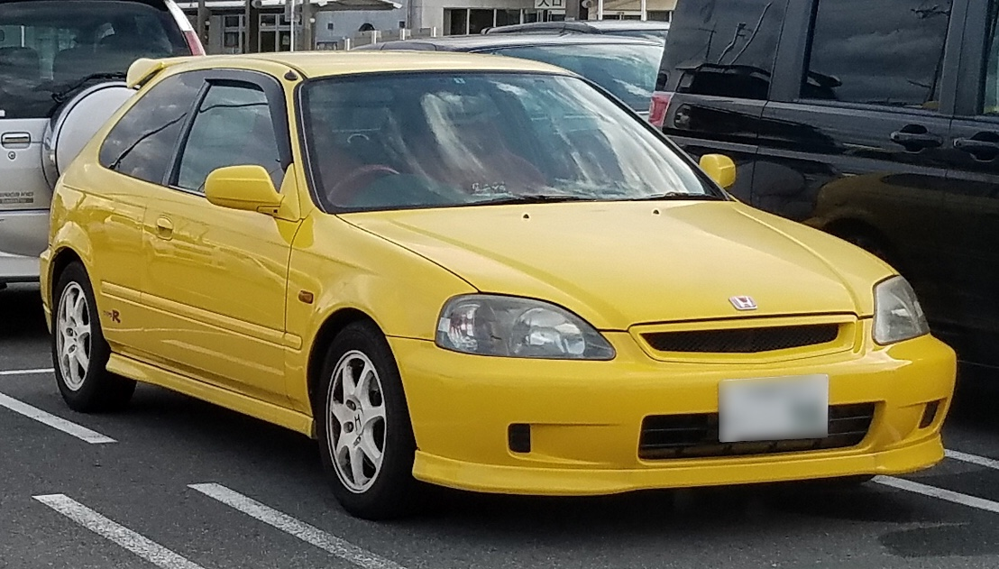
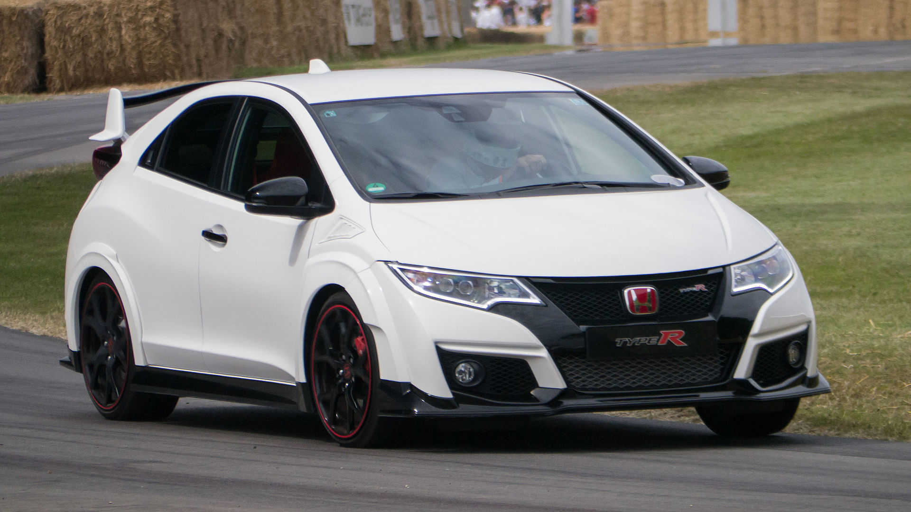

Перше покоління (EK9, 1997-2000)
Офіційний дебют 1-го покоління Honda Civic Type R (індекс EK9) відбувся в 1997 році. Саме тоді Honda Civic в кузові 3-х дв. хетчбек вперше отримав приставку Type R і всієї своєю сутністю доводив, що гідний розділяти філософію R зі спортивними Integra та NSX. На Civic Type R ставили атмосферний двигун B16B, об'ємом 1.6 літра із системою газорозподілу DOHC VTEC та і 5-ст. МКПП. Максимальна потужність цього двигуна досягала 185 к.с. при 8200 оборотах на хвилину. Це 115,6 к.с. на кожен літр робочого об'єму - рекорд навіть за сьогоднішніми мірками серед серійних моторів без турбонаддува об'ємом 1.6 літра. Ведуча передня вісь комплектувалася механічним блокуванням диференціалу. Автомобіль оснащувався передньою двухричажкою, укороченими пружинами і зміненими амортизаторами. У салоні - кермо Momo і спортивні крісла Recaro. Двигун 1.6 л B16B Р4 185 к.с. 160 Нм
Друге покоління (EP3, 2001-2005)
Друга Civic Type R (індекс EP3) з'явилася в 2001 році. Довжина моделі зменшилася до 4140 мм, але споряджена маса, навпаки, збільшилася - до 1246 кг. На новий Civic Type R встановлювали атмосферний K20A2 (K20A), який видавав вже 200 безнадувних сил. Двигун отримав нову інтелектуальну систему газорозподілу DOHC i-VTEC, систему VTC і електронну дросельну заслінку drive-by-wire. Максимальний обертовий момент в 193 Нм видається вже при 5600, а потужність 200 к.с. досягається на 7400 оборотах на хвилину. На японському ринку на Civic Type R встановлювали K20A 215 к.с. при 8000 і 202 Нм при 7000, вага автомобіля становить 1190 кг. Автомобіль отримав 6-ст. МКПП. Конструкція шасі була спрощена - передня двохважільна підвіска з міркувань компонування поступилася місце стійкам Макферсона. Версія Type R відрізнялася від звичайних Сівіків більш жорсткою підвіскою і поліпшеними гальмами. Більш того, моделі для внутрішнього ринку відрізнялися від старосвітських: JDM-модифікація отримала ще більш щільну підвіску, «самоблок» і гоночні сидіння Recaro. Блокуванням диференціалу комплектувалися і машини для американського ринку. У європейському варіанті Civic Type R розганявся до сотні за 6,8 с, а максимальна швидкість досягала 235 км/год. Двигуни 2.0 л K20A Р4 215 к.с. 2.0 л K20A2 Р4 200 к.с.
Третє покоління (FD2/FN2, 2007-2011)

У 2007 році запущено у виробництво третього покоління автомобілів Honda Civic Type R. З цього моменту в двох різних форм-факторах. Для європейського ринку Type R був представлений на базі хетчбека (індекс FN2), для японського і азіатського ринків - у седані (індекс FD2). Випускають 3-дверний Civic Type R на заводі Honda в Суїндоні, Англія. Там же, де робили її попередницю. Створений на базі гучного з космічним дизайном хетчбека 8-го покоління, європейський Civic Type R не розгубив гоночний дух і разом з тим став більш дружнім до міських умов (у ньому з'явилися клімат-контроль, датчик дощу і т. д.). довжина автомобіля складає 4275 мм, а споряджена маса - до 1301-1324 кг в залежності від виконання. Підвіска конструктивно змінилася - стійки McPherson спереду і напівзалежна балка ззаду. Автомобіль отримав двигун 2.0 л потужністю 201 к.с. при 7800 об/хв 193 Нм і 6-ст. МКПП. Час спурту до 100 км/год скоротилося до 6,6 с (максимальна швидкість залишилася на тому ж рівні - 235 км/год). На японський і азіатські ринки Type R був представлений в кузові 4-дверного седана. Відмінностей в останнього з європейським Type R Японська модель має потужність 225 к.с. при 8400 оборотах і 6-ст. МКПП.
Четверте покоління (FK2, 2015-2017)
В 2015 році представлено четверте покоління Honda Civic Type R (заводський індекс FK2), автомобіль отримав передній привод, бензиновий двигун з турбонаддувом 2,0 л VTEC K20C1 потужністю 310 к.с. при 6500 об/хв, крутним моментом 400 Нм при 2500-4500 об/хв і 6-ст. МКПП. Автомобіль розганяється від 0 до 100 км/год за 5,7 с і досягає максимальної швидкості 270 км/год. В передню вісь імплантоване механічне багатодискове блокування диференціала. Двигун 2.0 л K20C1 turbo Р4 310 к.с.
П'яте покоління (FK8, 2017-2022)
Прототип Civic Type R п'ятого покоління був представлений у вересні 2016 року на Паризькому автосалоні, а серійна версія (заводський індекс FK8) була представлена на Женевському автосалоні 2017 року. Автомобіль знову отримав незалежну підвіску задніх коліс.
pТепер 2,0-літровий VTEC turbo видає 320 к.с. при 6500 об/хв , а максимальний крутний момент 400 Нм при 2500-4000 об/хв і 6-ст. МКПП (забезпечена функцією автоматичної перегазовки). Розгін від 0 до 100 км/год складає 5,7 с, максимальна швидкість становить 270 км/год.
В порівнянні зі звичайним Сівіком у версії Type R змінена геометрія передньої підвіски McPherson, встановлені менш податливі пружини і адаптивні амортизатори (Є можливість регулювати амортизатори в трьох режимах - Comfort, Sport і +R. З настройками підвіски змінюються також відгуки на поворот керма і натиснення педалі газу. Що стосується гальм, то спереду це 350-мм чотирипоршневі диски з вентиляцією, ззаду - 305-мм дискові. ), а ззаду японці застосували багаторичажку з оригінальними міцнішими важелями. Жорсткість нового кузова на кручення в порівнянні з минулим хетчбеком Type R збільшилася на 38%, але гальма ті ж - чотирьохпоршневі Brembo на передній осі діаметром 350-мм з вентиляцією, ззаду - 305-мм дискові.
Шосте покоління (FL5, 2022-наш час)
Шосте покоління Civic Type R було представлено 20 липня 2022 року. Позначений кодом моделі FL5, зараз він виготовляється в Йорі, Сайтама, Японія, де також виготовляється звичайний ліфтбек Civic для японського ринку. FL5 Civic Type R вважається менш агресивним у дизайні порівняно зі своїм попередником з менш помітними декоративними вентиляційними отворами та меншими вентиляційними отворами. Він використовує менші 19-дюймові колеса порівняно з попереднім поколінням, яке мало 20-дюймові колеса, хоча контактна пляма ширша завдяки використанню шин Michelin Pilot Sport 4S із профілем 265/30 (раніше 245/30). Оснащена розширеними крилами, як і її попередник, модель FL5, навпаки, отримала розширені задні двері та задні частини замість використання пластикової надбудови для досягнення ширших задніх крил. В інтер’єрі модель оснащена напівковшеподібними сидіннями, червоним килимом і килимками, а також спеціальним інтерфейсом для екрана приладової панелі та екрана інформаційно-розважальної системи, який включає реєстратор даних Honda LogR для зберігання даних, таких як час кола. 2,0-літровий бензиновий двигун з турбонаддувом перенесено з попереднього покоління з поступовими змінами, такими як оновлений турбокомпресор, який має більш компактний корпус для підвищення загальної ефективності агрегату. У самій турбіні було оптимізовано кількість лопатей і форму для збільшення потужності та покращення повітряного потоку. Двигун 2.0 л K20C1 turbo I4 329 к.с. при 6500 об/хв 420 Нм при 2600-4000 об/хв